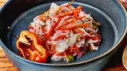

Pikliz
Home

Description
Pikliz is a Haitian pickled slaw with cabbage, bell peppers, carrots, and Scotch bonnet pepper that brightens up every dish.
Ingredients
- 2 cups shredded cabbage
- 1 cup shredded carrot
- 2 red or yellow bell peppers, thinly sliced
- 1/2 medium red onion, sliced
Steps
- Stuff cabbage, carrot, bell peppers, onion, scallions, Scotch bonnet pepper, allspice, peppercorn, cloves, and bay leaf into a mason jar with a lid until it's filled to the brim.
- Add vinegar, and lime juice and press down on the ingredients. Seal the jar and shake once.
- Refrigerate for 2 days for flavors to meld.